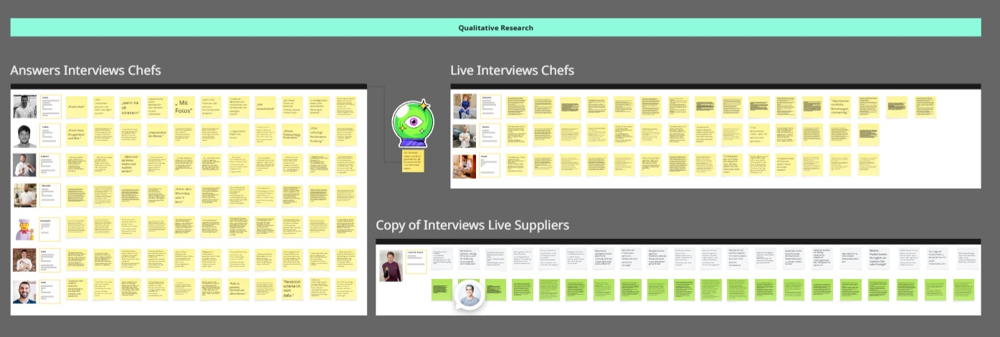
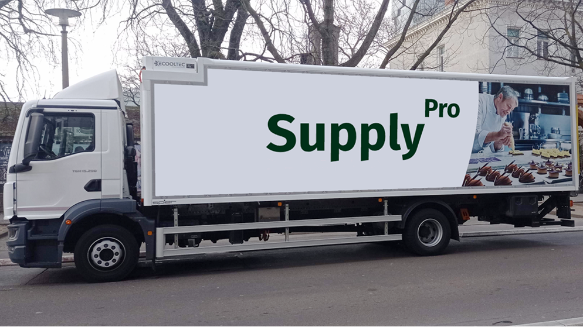
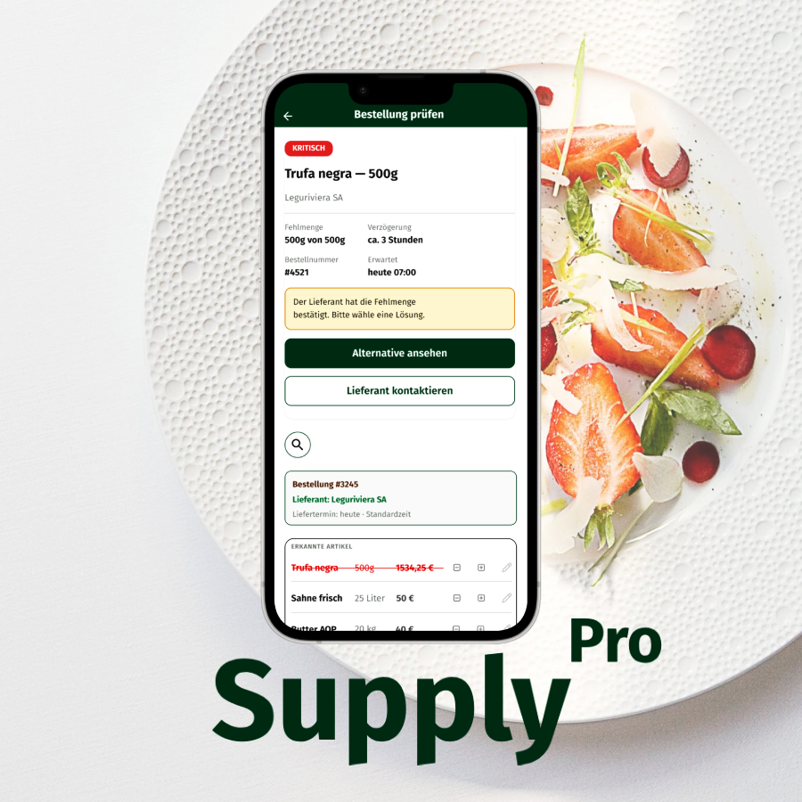

More Work
You might also
Supply Pro is an early warning system for professional kitchens. It detects supplier problems before they reach the service.
Built on 10 qualitative interviews with chefs across five countries, the product solves a single operational moment: the gap between order placement and delivery arrival.
Sixty percent of chefs surveyed reported direct stress from late supplier deliveries. The rest flagged quality or quantity issues. The problem is not that something is missing. It is not knowing until the truck is already at the door.

In 10 qualitative interviews with chefs from Switzerland, France, Spain, Germany, and Uruguay, the same pattern appeared every time. Late deliveries, quality problems, quantity discrepancies. Each one discovered at the worst possible moment: when the delivery truck is already at the door and the service starts in two hours.
Sixty percent of chefs surveyed reported direct stress from late supplier deliveries. The rest flagged quality or quantity issues. In every case, the damage was not the problem itself. It was the absence of time to react.
Luxury gastronomy runs on WhatsApp, phone calls, and paper. Nothing is documented. No system warns in advance. The chef absorbs the consequences even when the mistake originated with the supplier.
At that moment, the service is already at risk. There is no time left to react.
Each decision was a correction. A moment where the design process forced a choice between what looked good and what the research actually supported.
Dashboard — Order Overview. The dashboard shows what is happening today at a glance. Open orders, confirmed deliveries, active alerts. The information architecture follows the F-pattern: the most critical information top left, status information to the right. A chef has three seconds. Everything must be scannable without reading.
Early Warning — Alert Screen. The core of Supply Pro. When a supplier reports a problem, the warning appears proactively before the chef has to look for it. The screen shows which product is affected, what the problem is, and what options are available. The chef confirms. They do not decide from nothing.
Alternative Product Selection. When a product is unavailable, the system automatically suggests a replacement. Price, delivery time, and availability visible at a glance. The chef chooses, the system sends. No phone call, no WhatsApp, no manual documentation.
Supply Pro focuses on a single operational moment: the gap between placing an order and receiving a delivery. Three screens, one unambiguous flow.
The product does not replace existing kitchen management tools. It fills the blind spot they all share: the silence between the order and the arrival.
From the first tap to a confirmed decision in under three minutes.
Before: first usability test
After: revised interface


AI was not a single tool. It was a system of specialized tools — one matched to each phase of the Design Thinking process.
The long-term goal: Supply Pro becomes the operational memory of a professional kitchen.